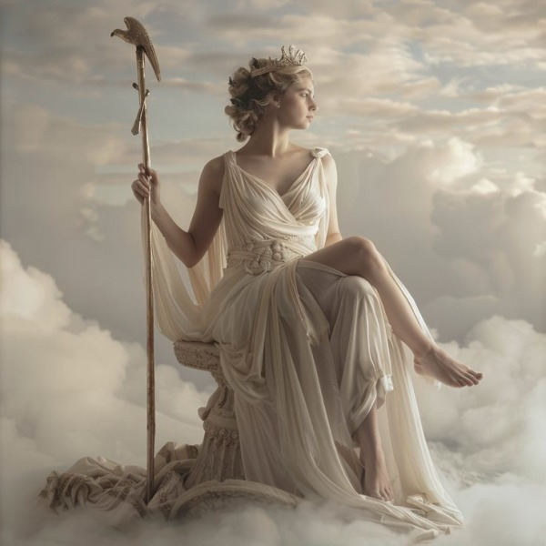

Гера – великая царица Олимпа: богиня, супруга, мстительница
В пантеоне древнегреческих богов Гера занимала особое положение – будучи одновременно сестрой и супругой Зевса, она олицетворяла саму идею священного брака и семейных уз. Её культ простирался далеко за пределы простого покровительства замужним женщинам, представляя собой сложный синтез материнской силы, царственной власти и неукротимой ревности.
Рожденная в семье титанов Кроноса и Реи, Гера разделила судьбу своих братьев и сестер – будучи проглоченной собственным отцом, она провела долгие годы в его чреве, пока хитроумный Зевс не освободил всех детей. По одной из версий мифа, её детство прошло на краю света, где её воспитывали морские божества Фетида и Океан. Именно там, вдали от бурных событий титаномахии, формировался характер будущей царицы богов – гордой, властной и невероятно преданной идее законности и порядка.
Гера была царицей богов и богиней женщин и деторождения. Ее мужем был Зевс, царь богов. Они жили на горе Олимп, где обитали боги. Гера носила корону или диадему – богато украшенную головную повязку, которая была символом королевской власти в древнем мире. Павлин и кукушка были её священными птицами, а корова – любимым животным. Геру возмущали отношения Зевса со смертными женщинами, и она часто мстила женщинам или их детям.
Свадьба Геры и Зевса стала центральным событием в мифологической истории Олимпа. Согласно преданию, верховный бог целых триста лет добивался расположения прекрасной богини, пока не прибегнул к хитрости – превратившись в дрожащую от холода кукушку, он вызвал у Геры жалость, и когда она прижала птицу к груди, снова принял свой истинный облик. Этот момент стал определяющим – с тех пор кукушка считалась священной птицей богини, а их брак, заключенный среди благоухающих садов Гесперид, положил начало новой эре в мире богов и людей.
Однако за внешним благополучием царственной четы скрывалась вечная драма. Гера, будучи богиней брака и хранительницей семейных уз, вынуждена была постоянно сталкиваться с бесконечными изменами своего супруга. Каждое новое увлечение Зевса становилось для неё жестоким ударом – и каждое вызывало волну страшных последствий. Ио, превращенная в корову и преследуемая оводом; Семела, погибшая в огне божественного сияния; Лето, вынужденная скитаться по миру перед родами – все эти трагедии были следствием неукротимой ревности богини. Особенно жестоко она преследовала Геракла, незаконнорожденного сына Зевса, посылая на него то змей в колыбель, то безумие, заставившее убить собственную семью.
Культ Геры был одним из самых древних и почитаемых в Греции. Главные центры её почитания находились в Аргосе, где находился величественный Герайон с колоссальной статуей работы Поликлета; на Самосе, который считался местом её рождения; в Олимпии, где её храм был древнее даже святилища Зевса. В этих местах совершались особые обряды – например, в Аргосе существовал ритуальный обычай "развязывания" статуи богини (Тонея), символизировавший освобождение женской плодородной силы. Особое значение имели Гереи – женские спортивные игры в Олимпии, проводившиеся в её честь.
В иконографии Гера неизменно предстает как величественная, зрелая женщина, облаченная в длинный хитон и покрывало замужней женщины. Её неизменными атрибутами были диадема – символ царской власти, скипетр с фигуркой кукушки и гранат, олицетворявший одновременно плодородие и связь с подземным миром. Часто её изображали сидящей на троне в окружении павлинов – этих роскошных птиц с "глазами" на хвосте, которые, согласно мифу, появились из тела стоглазого Аргоса, убитого по приказу Зевса, но ставшего слугой Геры.
Философы поздней античности видели в Гере глубокий космологический символ. Орфики считали её олицетворением воздушной сферы, соединяющей небо (Зевс) и землю (Деметра). Неоплатоники интерпретировали её образ как мировую душу, связующее звено между божественным и материальным. В современной психологии архетип Геры рассматривается как комплекс "раненой, но непокорённой супруги", борющейся за сохранение семьи вопреки всем испытаниям.
История Геры – это история вечной борьбы за сохранение порядка в мире, где даже боги подвержены страстям. Её образ, несмотря на кажущуюся второстепенность по сравнению с Зевсом, сохранил удивительную жизнеспособность, пережив века и превратившись из простого мифологического персонажа в сложный символ женской силы, супружеской верности и неистребимого достоинства перед лицом предательства.